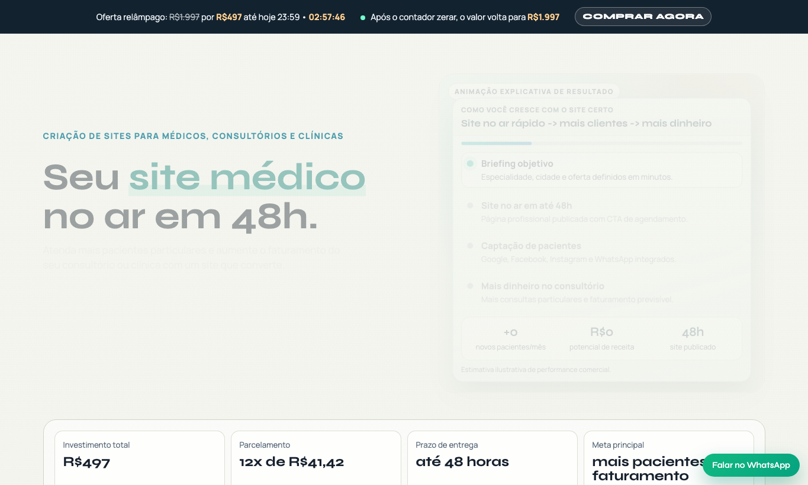

CRIAÇÃO DE SITES PARA MÉDICOS, CONSULTÓRIOS E CLÍNICAS
Seu site médico no ar em 2 dias.
Atenda mais pacientes particulares e aumente o faturamento do seu consultório ou clínica com um site que converte.
R$497 em 12x sem juros.
COMO FUNCIONA
Da decisão ao paciente agendado: fluxo simples em 2 dias
Você preenche briefing rápido, a página é publicada com CTA forte e o consultório já começa a captar contatos qualificados por WhatsApp.
IR PARA O CHECKOUT R$497Fluxo de implementação e resultado
Site no ar rápido -> mais clientes -> mais dinheiroBriefing objetivo
Especialidade, cidade e oferta definidos em minutos.
Site no ar em até 2 dias
Página profissional publicada com CTA de agendamento.
Captação de pacientes
Google, Facebook, Instagram e WhatsApp integrados.
Mais dinheiro no consultório
Mais consultas particulares e faturamento previsível.
GOOGLE + IA + MÉTRICAS PRÓPRIAS
Seu site precisa ser
encontrado por pacientes e por IA
Seu ativo digital não pode depender só de Instagram ou links curtos de terceiros.
Busca orgânica no Google
Estrutura com SEO técnico, páginas de especialidade, headings corretos, sitemap e conexão com Google Search Console para atrair mais pacientes sem depender só de anúncio.
Encontrabilidade em plataformas de IA
Conteúdo semântico, FAQ estruturada e marcação de dados para aumentar a chance de citação por motores de resposta como ChatGPT e outros assistentes.
Adeus amadorismo de link curto
Encaminhar tudo por Bitly enfraquece confiança e fragmenta dados. Com domínio próprio + UTM + GA4, você mede o funil completo e entende de onde vem cada cliente.
SITES REAIS NO AR
Veja um projeto entregue rodando ao vivo
PRESENÇA NAS PRINCIPAIS PLATAFORMAS
Escale seu negócio nas maiores plataformas digitais
Google, Google Meu Negócio, Facebook, Instagram e WhatsApp trabalhando em conjunto para trazer mais clientes para seu consultório.
 Google
Google
 Google Meu Negócio
Google Meu Negócio
 Facebook
Facebook
 Instagram
Instagram
 WhatsApp
WhatsApp
Feche seu site agora e comece a captar pacientes ainda hoje
Oferta de entrada para médicos que querem escalar rápido: de R$1.997 por R$497.
PARA QUEM É ESSE SITE
Principais especialidades médicas atendidas
Cardiologia
Dermatologia
Ginecologia
Ortopedia
Pediatria
Psiquiatria
Endocrinologia
Urologia
Neurologia
Oftalmologia
Otorrinolaringologia
Gastroenterologia
Pneumologia
Reumatologia
Clínico Geral
Nutrologia
Cirurgia Plástica
Oncologia
SEM SITE, O CUSTO É DIÁRIO
O que você perde ao não ter um site médico
Pacientes do Google
Quando o paciente busca sua especialidade + cidade, ele agenda com quem transmite mais confiança online.
Autoridade profissional
Sem site próprio, sua presença digital parece incompleta e reduz a percepção de valor da sua consulta.
Desempenho dos anúncios
Mandar tráfego direto para redes sociais costuma encarecer o lead e derrubar conversão.
Controle do seu ativo
Plataformas mudam regras o tempo todo. O site é seu patrimônio digital e canal previsível de captação.
MODELO VISUAL DE ALTA CONVERSÃO
Seu site médico com presença premium em desktop e mobile
Layout visual forte, leitura rápida e CTA estratégico para levar o paciente do interesse ao agendamento.
QUERO ESSE MODELO+ Pacientes
+ Faturamento
ESTRUTURA COMERCIAL PARA MÉDICOS
Transforme visitas em agendamentos e consultas particulares
Seu paciente entende rápido quem você atende, confia no seu posicionamento e clica para falar no WhatsApp. Resultado: mais agenda preenchida e mais faturamento para consultório e clínica.
IR PARA O CHECKOUT R$497POR QUE ESSE MODELO CONVERTE
Tudo que você precisa para transformar visita em agendamento
Estrutura comercial completa para médicos: autoridade, clareza de especialidade, prova social e chamada direta para WhatsApp.
O que você recebe
- Copy focada em consulta particular
- Página estratégica com seções essenciais
- Botões e formulários para contato imediato
- Layout premium para desktop e mobile
Por que funciona
- Mensagem objetiva para o paciente decidir
- Credibilidade visual acima de perfil social
- Jornada curta, sem distrações
- CTA nos pontos de maior intenção
Resultado esperado
- Mais contatos qualificados
- Melhor aproveitamento de tráfego pago
- Posicionamento profissional mais forte
- Mais previsibilidade na agenda
IDENTIDADE VISUAL PREMIUM
Design moderno que transmite confiança médica
A primeira impressão do paciente muda em segundos quando seu site passa credibilidade, organização e profissionalismo.
UX PARA CONVERSÃO
Fluxo pensado para levar do interesse ao WhatsApp
Cada seção reduz objeções, reforça autoridade e conduz o paciente para o próximo passo: agendar consulta.
PERFORMANCE REAL
Microinterações 3D com carregamento rápido
Visual diferenciado para destacar sua marca, sem sacrificar velocidade de leitura e conversão.
OFERTA ESPECIAL PARA MÉDICOS
Seu site médico completo
por R$497, publicado
em até 2 dias
- Estrutura com especialidades, currículo e diferenciais
- Botão de WhatsApp, formulário e mapa do consultório
- Copy persuasiva e revisão estratégica do conteúdo
- Página pronta para tráfego de Google, Facebook e Instagram Ads
FAQ para médicos que buscam site, mais pacientes e respostas rápidas
Quanto custa criar um site para médico ou clínica?
Hoje, a oferta é de R$497 em 12x sem juros. É uma condição promocional de entrada para site médico de alta conversão.
Em quanto tempo o site médico fica pronto?
Com briefing aprovado e material básico enviado, o site é publicado em até 2 dias.
Como um site para médico ajuda a atrair mais pacientes particulares?
O site melhora sua autoridade digital, organiza sua proposta de valor e transforma visitas em agendamentos via WhatsApp e formulário.
Site para médico ajuda no Google e no Google Meu Negócio?
Sim. Incluímos estrutura SEO on-page, metadados, sitemap, Search Console e orientações para fortalecimento do Google Meu Negócio.
Como esse site pode ser encontrado por IA como ChatGPT, Gemini e Perplexity?
Aplicamos conteúdo semântico por intenção de busca, FAQ objetiva e dados estruturados Schema.org para aumentar elegibilidade em motores de resposta.
Esse site serve para Google Ads, Facebook Ads e Instagram Ads?
Sim. A estrutura é feita para tráfego pago, carregamento rápido e conversão de visitantes em contatos no WhatsApp.
Quais tags e marcações técnicas vocês configuram no site?
Configuramos title e description, Open Graph, Twitter Cards, canonical, robots, dados estruturados de Serviço, Organização e FAQ, além de UTM + GA4.
Quais especialidades médicas atendem melhor com esse modelo?
O modelo atende cardiologia, dermatologia, ginecologia, ortopedia, pediatria, psiquiatria, endocrinologia, urologia e outras especialidades.
Preciso já ter domínio e hospedagem para contratar?
Não obrigatoriamente. Se você já tiver, usamos no projeto. Se não tiver, te orientamos na compra e configuração para publicação rápida.
ENCERRAMENTO DA OFERTA R$497
Seus próximos pacientes já estão procurando no Google. A pergunta é: eles vão encontrar você?
Garanta seu site agora por R$497, entre no ar em até 2 dias e tenha um canal profissional para gerar mais clientes, consultas e faturamento com previsibilidade.
Quero entrar no ar em 2 dias